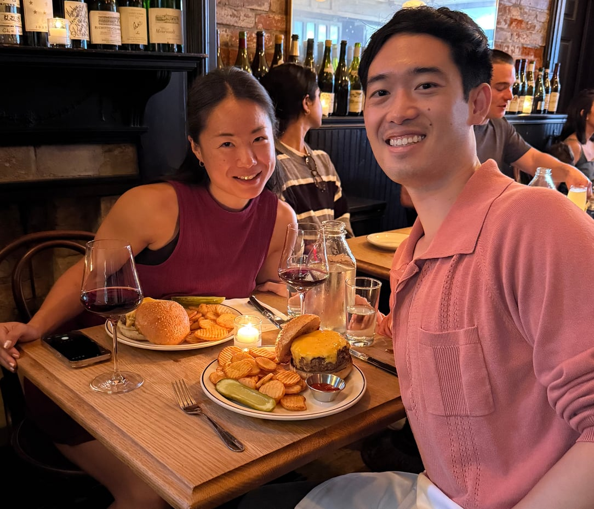
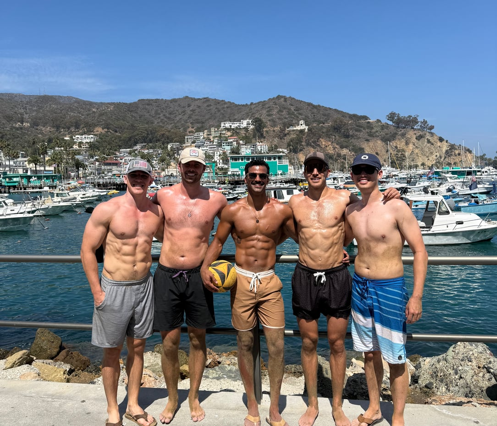
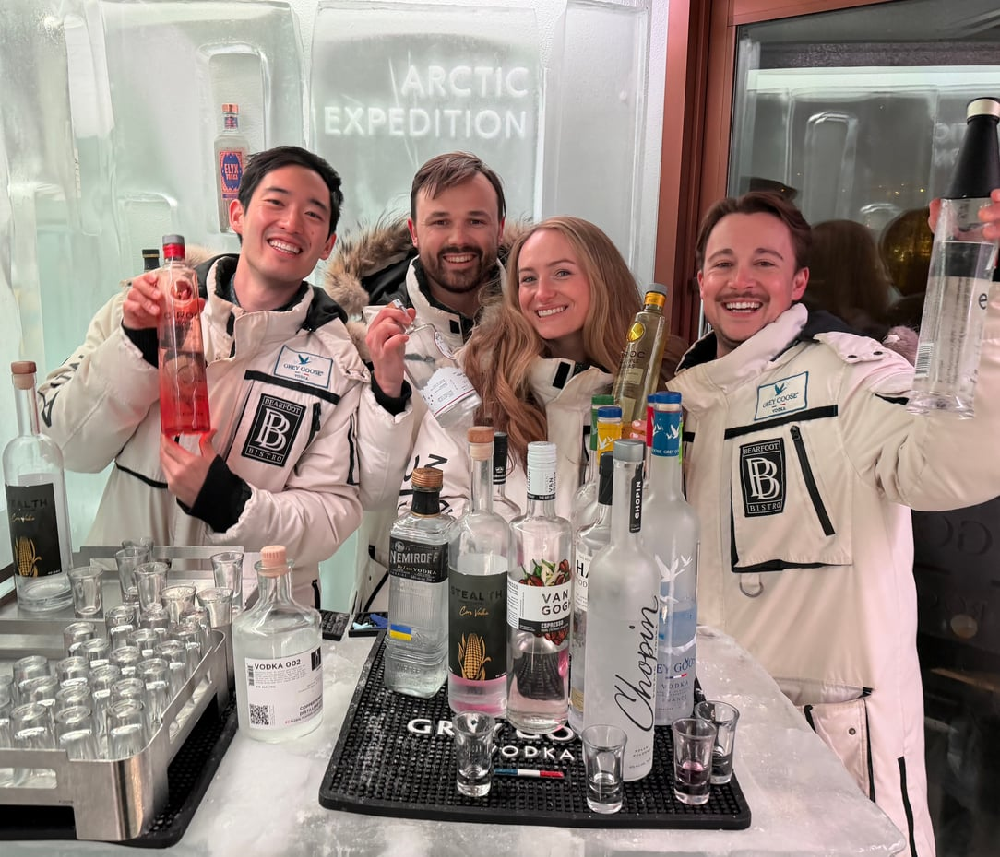
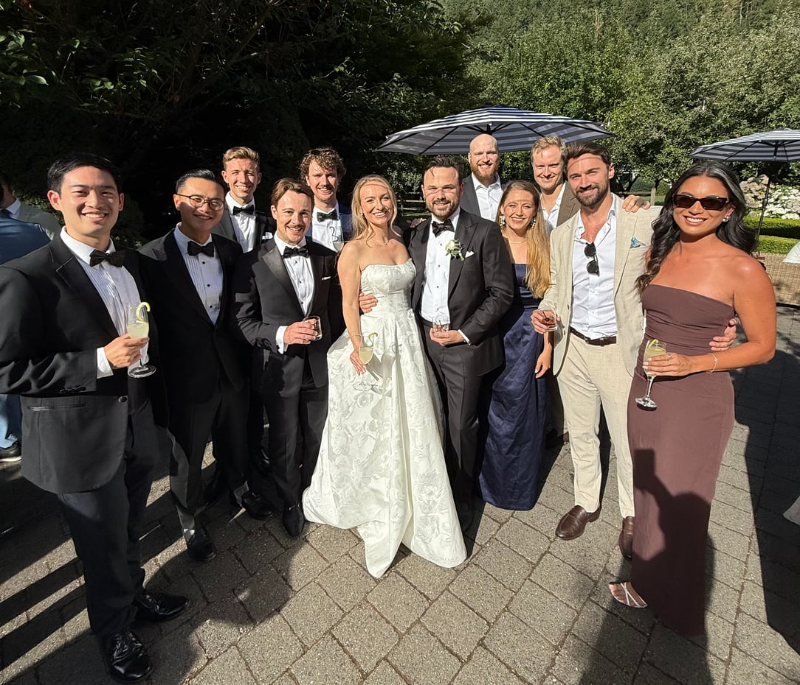
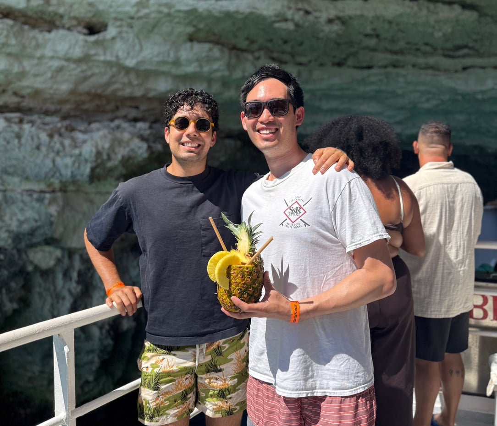

A digital scrapbook
This website is dedicated to preserving all my spontaneous adventures, precious memories, and life changing experiences. Although the main goal is to create a repository of my life, this site also serves as a self-imposed accountability measure, forcing me to step beyond my comfort zone and explore what life has to offer. Please explore the site and take a trip down memory road with me!
Latest in 2026
See the full year
Esther Visit NYC September 6th, 2026
Catalina August 28th-30th, 2026
Summer in Whistler August 19th-24th, 2026
Danny & Sab's Wedding July 31st to August 2nd, 2026 Irvine Summer
July and August 2026
Irvine Summer
July and August 2026

Italy & Malta 2026 June 18th-27th, 2026Prefer to wander? See every place on the map.
About Me
My name is Patrick Ong, and I created this website to capture the amazing moments, people, and places that have shaped my life.
I have called Southern California, Berkeley, San Francisco, and New York home.
Along the way, I have developed a love for rock climbing, scuba diving, skiing, golfing, traveling, teaching and mentoring, and exploring new restaurants.
I am an extrovert by nature and love trying new things, especially with friends and family. I am really big on investing in unique experiences and adventures, anything that allows me to explore the world outside of my day-to-day life.
The Bucket List
I have been fortunate to have some incredible experiences over the years, but there is still so much I want to do and see. A few things on my bucket list:
- Become a certified divemaster
- Go heli-skiing
- Scuba dive in Indonesia
- Rock climb in Yosemite
- Take a golf trip to Ireland
- Host a recurring dinner series in whichever city I call home
- Visit at least half the countries in the world
Beyond the adventures, I hope to make a meaningful impact through teaching, mentoring, and giving back. At the end of the day, I want to look back and know that I made the most of it.